정보통신기사(구) (2005-05-29 기출문제)
1과목: 디지털 전자회로
1. 다음 회로에 대한 설명으로 옳지 않은 것은?
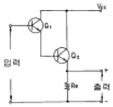
- Q1과 Q2는 Darlington 접속이다.
- 이 회로는 emitter follower 이다.
- Q1과 Q2의 조합은 등가적으로 NPN 트랜지스터이다.
- Vcc의 전원은 부(-)이어야 한다.
(정답률: 70%)

2. 그림의 복수 에미터 트랜지스터가 이루는 논리게이트는?
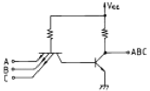
- TTL
- DTL
- DCTL
- RTL
(정답률: 알수없음)
3. 반송파와 변조파주파수가 각각 일정한 경우, 다음의 각 변조지수로 FM변조를 할 때 가장 양호한 신호대 잡음비를 기대할 수 있는 경우는?
- 0.4
- 0.5
- 1.0
- 5.0
(정답률: 알수없음)
4. 아날로그-디지털 변환에 가장 유효하게 사용되는 코드는?
- BCD 코드
- 3초과 코드
- 그레이 코드
- 링 카운터 코드
(정답률: 알수없음)
5. 디지털 분야의 논리소자로서 바이폴라소자가 아닌 것은?
- TTL
- C-MOS
- DTL
- HTL
(정답률: 알수없음)
6. 양의 VGS로 된 n채널 공핍형 MOSFET의 동작은?
- 공핍형 모드에서 동작한다.
- 증가형 모드에서 동작한다.
- 차단에서 동작한다.
- 포화에서 동작한다.
(정답률: 알수없음)
7. 다음 차동증폭기의 차신호의 전압이득 Av = 100 이다. 출력전압 Vo는? (단, 동상신호는 무시한다.)
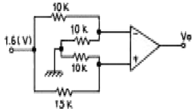
- 15[V]
- 16[V]
- 17[V]
- 18[V]
(정답률: 알수없음)
8. MS F-F 의 진리표에서 Jn=1, Kn=0 이고 클럭펄스를 인가할 때 출력 Qn+1 의 값은?
- Qn
- 0
- 1
- 불확정
(정답률: 알수없음)
9. 그림과 같은 단안정 멀티바이브레이터의 출력(Vo)파의 펄스폭 T[sec]는?
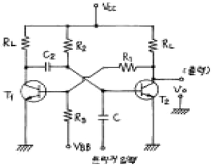
- T = C2R2 ln 10
- T = R1R2 ln 2
- T = C2R2 ln 2
- T = C2R1 ln 2
(정답률: 70%)
10. 그림과 같은 회로에서 입력에 Vi = 50 sin ωt[V]인 정현파를 가했을 때 출력 Vo의 파형으로 옳은 것은? (단, D1, D2의 항복전압은 10[V]이다.)
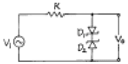
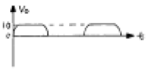
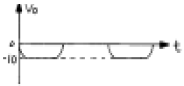
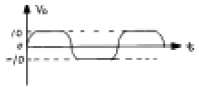
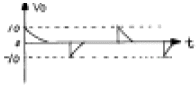
(정답률: 알수없음)
11. RC결합 증폭회로에서 증폭 대역폭을 4배로 하려면 증폭이득을 약 몇 [㏈] 감소시켜야 하는가?
- 0.5[㏈]
- 4[㏈]
- 6[㏈]
- 12[㏈]
(정답률: 알수없음)
12. 다음 회로에서 다이오드 D1과 D2가 동시에 차단상태로 되는 조건으로 옳은 것은? (단, V2 ＞V1이다.)
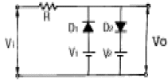
- Vi ≤ V1
- V1 ＞ Vi ＞ V2
- V1 ＜ Vi＜ V2
- Vi ≥ V2
(정답률: 40%)
13. 다음의 내용 중에서 귀환형 발진기의 특징과 관계가 없는 항은?
- 귀환형 발진기에서는 입력신호가 필요하지 않다.
- 귀환형 발진기에서는 출력의 일부가 입력으로 정귀환 된다.
- 귀환형 발진기에서 종합 루프이득은 1이다.
- 귀환형 발진기에는 귀환회로에 반드시 인턱터(L)를 사용해야 한다.
(정답률: 46%)
14. 그림과 같은 교류적 등가회로로 표시되는 발진회로의 발진주파수는?
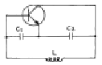
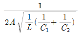
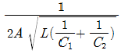
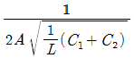
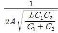
(정답률: 알수없음)
15. 입력전압이 Vi, 출력전류가 io 일 때, 다음 식은 출력전류와 입력전압의 비선형 관계를 표시한 식이다. 진폭 변조와 관계되는 항은? (단, Ao,A1,A2,A3,···는 상수이다.) (문제오류로 복원중입니다. 정확한 내용을 아시는 분께서는 오류신고를 통하여 내용 작성 부탁드립니다. 정답은 3번입니다.)
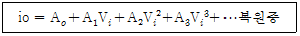
- Ao 항
- A1Vi 항
- A2Vi2 항
- A3Vi3 항
(정답률: 알수없음)
16. 펄스변조방식 중 디지털 펄스변조에 해당되지 않는 것은? (문제오류로 인해 복원중입니다. 정확한 내용을 아시는 분께서는 오류신고를 통하여 내용 작성 부탁드립니다. 정답은 4번입니다.)
- PNM
- 복원중
- PCM
- PTM
(정답률: 알수없음)
17. 다음 이상적인 연산증폭 회로의 출력전압 eo는?
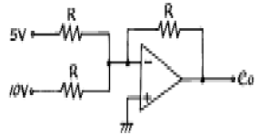
- 5[V]
- 10[V]
- -15[V]
- -20[V]
(정답률: 알수없음)
18. 전원장치의 필터를 설계할 때 리플계수(ripple factor)에 관한 내용 중 틀린 것은?
- 리플계수는 필터의 효율을 나타내는 계수이다.
- 리플계수는 작을수록 좋다.
- 리플계수 = 리플전압의실효값 / 필터의직류전압의평균값
- 리플계수는 부하저항을 감소시키면 적어진다.
(정답률: 67%)
19. RC결합 증폭기에 구형파 전압을 입력시켜 그림과 같은 출력이 나왔다면, 이 증폭기의 주파수 특성을 가장 적합하게 설명한 것은?
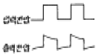
- 저역 특성이 특히 좋지 않다.
- 중역 특성이 특히 좋지 않다.
- 고역 특성이 특히 좋지 않다.
- 중역과 고역특성이 모두 나쁘다.
(정답률: 알수없음)
20. 점유율이 50[%]인 10 [MHz]의 클럭신호로부터 펄스폭이 1[초]인 게이트 펄스를 얻어내기 위해 분주회로를 구성할 때 필요로 하는 분주회로의 종류와 개수를 올바르게 선택한 항은?
- 10분주회로 6개, 2분주회로 2개
- 10분주회로 7개, 2분주회로 1개
- 10분주회로 7개
(정답률: 알수없음)
2과목: 정보통신 시스템
21. LAN에서 사용되지 않는 토폴로지(topology)는?
- 링 토폴로지(ring topology)
- 메쉬 토폴로지(mesh topology)
- 스타 토폴로지(star topology)
- 버스 토폴로지(bus topology)
(정답률: 알수없음)
22. ITU-T 권고안 중 공중데이터 통신망에서 패킷형 터미날을 위한 DCE와 DTE 사이의 접속규격은?
- X.3
- X.25
- X.29
- X.21
(정답률: 80%)
23. 회선교환(circuit switching)의 특징이 아닌 것은?
- 전용 전송로를 가진다.
- 고정된 대역폭으로 데이터를 전송한다.
- 호출된 자국이 바쁘면 busy 신호를 낸다.
- 메시지 분실에 대한 책임을 네트워트가 진다.
(정답률: 59%)
24. 메시지에 주소를 부여하고 통신 노드들간의 경로 설정 및 메시지 흐름 제어를 하는 계층은?
- 네트워크 계층
- 세션 계층
- 응용 계층
- 프리젠테이션 계층
(정답률: 91%)
25. PCM 장치에서 표본화 주기를 125[㎲]로한 24CH PCM 통신 방식의 점유 주파수 대폭은? (단, 각 CH의 디지트는 음성 7 디지트, 신호 1 디지트이며 전체 동기용으로 별도 1 디지트를 둔다.)
- 8000[㎐]
- 1536[㎑]
- 1544[㎑]
- 1867[㎑]
(정답률: 알수없음)
26. 어떤 통신시스템을 1000시간 동안 운용하는 과정에서 장애로 인해 2번 운용 중단 사고가 발생하였다. 각 각 중단 시간이 1시간, 3시간 이었다면, 이 통신시스템의 가용도(availability)는 얼마인가?
- 97.0 %
- 98.0 %
- 99.1 %
- 99.6 %
(정답률: 알수없음)
27. 데이터 통신에서 급여나 요금계산, 경영자료 작성 등의 정보를 발생할 때마다 처리하지 않고 기록 매체에 의해 일괄 처리하는 방식은?
- on-line system
- real time system
- delayed time system
- batch processing system
(정답률: 알수없음)
28. PCM 전송시스템의 수신측에서 본 아이(EYE) 패턴으로 알 수 있는 것은?
- 정확한 에러율
- 전송로상의 파형 찌그러짐
- 양자화 잡음
- 변조방식
(정답률: 알수없음)
29. 우리나라에도 국내 또는 국제영상회의 서비스가 운용되고 있다. 이에 관한 다음 설명 중 틀리는 것은?
- 영상회의는 아날로그(Analog) 통신방식으로 전송하고 있다.
- 유선 또는 무선전송방식이 가능하므로 해저 케이블, 위성통신이 가능하다.
- 경제적인 요금을 위해 T1급 등으로 대역을 압축한다.
- VIDEO와 AUDIO가 동시에 스튜디오에 재현될 수 있다.
(정답률: 알수없음)
30. 가상회선(virtual circuit) 패킷교환방식과 데이터그램(datagram) 패킷교환방식의 공통점이 아닌 것은?
- 패킷들은 전달될 때까지 저장되기도 한다.
- 각 패킷에 대하여 경로를 선택해야 한다.
- 전용선로는 없다.
- 대역폭 사용이 융통적이다.
(정답률: 알수없음)
31. 데이터 통신시스템에서 송신회선과 수신회선을 각각 2선식으로 완전 분리하여 운용되는 통신방식은?
- 단일회선방식
- 반이중방식
- 전이중방식
- 분리회선방식
(정답률: 70%)
32. 전기통신망의 효율적이고 체계적인 관리시스템 구축을 위해 요구되는 사항과 가장 관계가 없는 것은?
- 서로 다른 시스템간의 상호 연동성
- 언제 어디서나 원하는 서비스를 제공할 수 있는 접속 유연성
- 하드웨어 상에 소프트웨어의 이식 운용성
- 주요 특정 서비스만을 위한 관리의 경제성
(정답률: 64%)
33. CSMA/CD 방식에 관한 설명 중 틀린 것은?
- 버스 구조에 이용될 수 있다.
- 제록스사가 개발한 방식이다.
- 동축케이블을 사용할 수 있다.
- 단말기 사이에 신호 충돌이 없다.
(정답률: 알수없음)
34. 광대역 ISDN(B-ISDN)을 구현키 위하여 ITU-T에서 선택한 전송기술은 ( ) 이고, 이 기술의 실제근간을 이루는 물리적 전송망은 ( ) 이다. 앞의 두 ( ) 안에 맞는 것은?
- SONET/SDH, ATM
- ATM, SONET/SDH
- X.25, SONET/SDH
- SONET/SDH, X.25
(정답률: 60%)
35. 서비스 프리미티브의 기본 기능이 아닌 것은?
- 요구
- 응답
- 기동
- 확인
(정답률: 72%)
36. 셀룰라 이동통신에서 원근 문제(near-far problem)를 해결하는데 적용하는 방식은?
- 광증폭기 적용
- 전력제어 적용
- 등화기 적용
- 감쇠기 적용
(정답률: 50%)
37. ISDN에서 각 국(station)간에 채용하는 신호 방식은?
- D channel 신호방식
- 공통선 신호방식
- Tl 전송방식
- 채널결합 신호방식
(정답률: 58%)
38. 통신 프로토콜의 기능으로서 옳지 않은 것은?
- 정보의 다양화
- 인캡슐화
- 오류 및 순서제어
- 연결의 확립과 종결
(정답률: 알수없음)
39. 프로토콜의 계층구조상의 기본구성 요소가 아닌 것은?
- 개체(Entity)
- 접속(Connection)
- 구문(Syntax)
- 데이터 단위(Data unit)
(정답률: 알수없음)
40. 전송속도가 4,800[bps]이고 8위상 편이 변조방식을 사용할 때의 변조속도[Baud]는?
- 1,200
- 1,400
- 1,600
- 1,800
(정답률: 75%)
3과목: 정보통신 기기
41. 집중화기의 구성요소가 아닌 것은?
- 단일회선제어기
- 중앙처리장치
- 다수선로제어기
- 모뎀
(정답률: 50%)
42. 은행, 백화점, 댐, 하역장, 공장 및 사람이 접근할 수 없는 산업현장 등을 감시하는데 가장 적합한 것은?
- CATV
- VRS
- HDTV
- CCTV
(정답률: 64%)
43. 디지털 신호로 전송하기 위하여 필요한 변조 방식은?
- FSK
- PCM
- PSK
- QAM
(정답률: 알수없음)
44. 비디오 텍스의 알파 모자이크 방식의 도형 소편 종류에 해당 되지 않는 것은?
- 블록 소편
- 점 소편
- 평활화 소편
- 선 소편
(정답률: 알수없음)
45. 푸시 버튼 전화기에서 숫자 버튼 기능의 주파수에 대해 맞는 것은?
- 1 = 697[Hz] + 1633[Hz]
- 5 = 941[Hz] + 1336[Hz]
- 9 = 852[Hz] + 1477[Hz]
- 0 = 770[Hz] + 1336[Hz]
(정답률: 70%)
46. 다음 중 변복조기의 고려사항이 아닌 것은?
- 변조방식
- 동기방식
- 등화방식
- 다중화방식
(정답률: 알수없음)
47. 다음 중 통신제어기능을 담당하지 않는 장비는?
- MODEM
- DSU
- CCU
- Repeater
(정답률: 55%)
48. 여러종류의 패턴인식, 화상처리, 언어 등의 입력을 처리하는 것은?
- 데이터통신회선
- 터미널
- 데이터처리설비
- 통신제어장치
(정답률: 42%)
49. 네트워크를 서로 연결하여 상호접속을 위한 망간연동장치로 사용되지 않는 것은?
- 리피터
- 브리지
- 라우터
- 트랜시버
(정답률: 알수없음)
50. 다음 중 교환기의 가입자선 정합부의 기능이 아닌 것은?
- Battery feed
- Office signaling
- Ringing
- Testing
(정답률: 알수없음)
51. CCTV의 기본구성 요소가 아닌 것은?
- 분기장치
- 촬상장치
- 표시장치
- 전송장치
(정답률: 알수없음)
52. 방전관의 원리를 응용한 PDP(Plasma Display Panel)의 특징을 가장 잘 설명한 것은?
- LCD보다 구동회로가 간단하고 가격이 싸서 주로 소형계산기에 사용된다.
- 발광형으로 응답이 빠르며 신뢰성이 높고 수명이 길다.
- 수광형, 저전력으로 구동회로를 LSI화 함으로써 휴대하기가 쉽다.
- 진공관 속에 전자빔을 발사하는 전자총과 형광면으로 구성된다.
(정답률: 37%)
53. 다음 중 전자교환기의 통화로계의 구성요소가 아닌 것은?
- 통화로장치
- 주사장치
- 통화로 제어장치
- 시스템 제어장치
(정답률: 알수없음)
54. 무선통신 단말기의 기능으로 관계가 적은 것은?
- RF 신호 변복조
- 통화 채널 설정
- 위치 등록
- 음성 코딩 및 디코딩
(정답률: 알수없음)
55. 다음 중 무선송신기에서 꼭 필요하지 않은 것은?
- 전력증폭기
- 변조기
- 발진기
- 중간주파 증폭기
(정답률: 알수없음)
56. 다음 중 비디오텍스의 활용분야가 아닌 것은?
- 정보 검색
- 메시지 전달
- 원격 감시
- 문자 방송
(정답률: 알수없음)
57. 회선을 보유하거나 임차하여 정보의 축적, 가공, 변환하여 광범위한 서비스를 제공하는 것은?
- LAN
- VAN
- CATV
- ISDN
(정답률: 90%)
58. 무선 통신에서는 수신 출력이 저하 되거나 파형의 일그러짐이 발생되는데 이에 대한 원인인 페이딩(Fading)을 방지하는 방법에 해당되지 않는 것은?
- 주파수 다이버 시티
- 자동이득 조절회로
- 재생 중계기
- 공간 다이버 시티
(정답률: 46%)
59. 완충증폭기에 대한 설명 중 옳지 않은 것은?
- 발진회로와 부하간을 격리한다.
- 부하변동의 영향을 막기 위하여 설치한다.
- 발진기의 발진주파수를 안정시키기 위해 설치한다.
- 변조기 다음단에 설치하며, 효율은 체배증폭기 보다 좋다.
(정답률: 59%)
60. 컴퓨터를 사용하여 마이크로 필름에 들어있는 정보를 검색하는 장치는?
- CAM
- CAR
- COM
- OCR
(정답률: 알수없음)
4과목: 정보전송 공학
61. 주파수 대역폭이 30[㎑], S/N비가 7인 채널을 통하여 전송할 수 있는 정보량은 몇[b/s]인가?
- 2.1 x 103
- 4.2 x 103
- 6 x 103
- 9 x 104
(정답률: 알수없음)
62. 다음 그림은 ASCII(America Standard Code for Information Interchange) 코드를 사용하여 페리티체크(Parity check)를 하는 과정이다. 마지막 결과로서 맞는 것은?
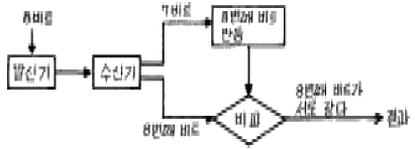
- 8비트 데이타상에 1비트의 에러가 발생하였다.
- 8비트 중 4비트는 다시 재전송 돼야 한다.
- 8비트 데이타상에 에러가 없다.
- 발생된 1비트의 에러가 수정되었다.
(정답률: 알수없음)
63. 광섬유 케이블의 특성이 아닌 것은?
- 회선 접속이 용이하다.
- 전기적 잡음의 영향이 거의 없다.
- 보안성이 뛰어나다.
- 대역폭이 넓다.
(정답률: 73%)
64. 동축케이블에 대한 설명으로 잘못된 것은?
- 개방형 선로이다.
- 내부도체, 외부도체, 절연체로 구성된다.
- 불평형 선로이다.
- 광대역 전송로이다.
(정답률: 알수없음)
65. 에일리어싱(Aliasing) 현상이 발생하는 이유는?
- 표본화 정리에 준하여 설정된 표본화 주파수보다 높게 표본화할 때 발생한다.
- 표본화 정리에 준하여 설정된 표본화 주파수보다 낮게 표본화할 때 발생한다.
- 표본화 정리에 준하여 설정된 표본화 주파수와 상관없이 발생되는 현상이다.
- 음성신호를 샘플링할 때, 음성신호의 특성상 발생하는 현상이다.
(정답률: 알수없음)
66. 다음 중 전송선로의 무왜조건이 성립하기 위한 R,L,C,G의 관계는? (단, R은 단위 길이당 저항, L은 단위길이당 인덕턴스, C는 단위길이당 커패시턴스, G는 단위길이당 콘덕턴스 )
- RC = LG
- RL = 2GC
- RG = LC
- RG = 2LC
(정답률: 알수없음)
67. 북미 표준방식의 TDM신호규격에 맞지 않는 것은?
- DS1은 24회선이며 전송속도는 1.544[Mb/S]이다.
- DS2는 4 DS1이며 전송속도는 6.312[Mb/S]이다.
- DS3는 7 DS2이며 전송속도는 32.064[Mb/S]이다.
- DS4E는 유럽식이며 전송속도는 139.26[Mb/S]이다.
(정답률: 37%)
68. HDLC에서 1개의 프레임 구성에서 사용되는 프레그(Flag)는 모두 몇 비트인가?
- 8비트
- 16비트
- 32비트
- 24비트
(정답률: 알수없음)
69. 아날로그 신호를 디지탈 신호로 부호화하고 이의 역변환인 복호화를 행하는 기능을 가지는 것은?
- 멀티플렉서(Multiplexer)
- 모뎀(Modem)
- 코덱(Codec)
- 모듈레이터(Modulator)
(정답률: 알수없음)
70. 음성신호를 디지털 신호로 변환하기 위해 6비트 A/D 변환기를 이용하였다. 만약 8비트 A/D 변환기를 이용하게 되면 6비트 A/D 변환기를 사용했을 때에 비해 SNR은 어떻게 변화되는가?
- 6비트 A/D 변환기를 사용했을 때에 비해 3dB 증가
- 6비트 A/D 변환기를 사용했을 때에 비해 6dB 증가
- 6비트 A/D 변환기를 사용했을 때에 비해 9dB 증가
- 6비트 A/D 변환기를 사용했을 때에 비해 12dB 증가
(정답률: 알수없음)
71. 다음의 베이스 밴드 전송방식중 저주파 차단왜곡이 가장 적은 신호방식은?
- 단류방식
- 단류 RZ방식
- 바이폴라방식
- 복류방식
(정답률: 알수없음)
72. 4개의 문자중 하나를 보내는 정보원이 있다. 각 문자의 확률이 1/2, 1/4, 1/8, 1/8 일 때 1개의 문자에 대한 엔트로피[bit/symbol]는?
- 5/4
- 7/4
- 9/4
- 11/4
(정답률: 50%)
73. 통신속도 표시 방법중 1초 동안에 몇 번의 변조가 수행되었는가를 나타내는 단위는 무엇인가?
- bps
- baud
- cps
- Hz
(정답률: 64%)
74. 다음 그림에서 양극 RZ 부호는 어떤 것인가?
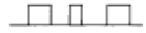
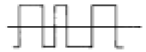
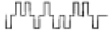
(정답률: 60%)
75. 4선식 회선에 가장 효율적인 통신방식은?
- 단향통신
- 반이중통신
- 전이중통신
- 4중통신
(정답률: 알수없음)
76. 다음 중 내부 잡음인 것은?
- 자연 잡음
- 이그니션 잡음
- 산탄 잡음
- 인공잡읍
(정답률: 알수없음)
77. 다음 그림은 어떤 변복조 방식을 나타낸 것인가?
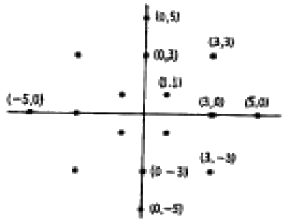
- DPSK
- PCM
- PAM
- QAM
(정답률: 알수없음)
78. HDLC 프로토콜에서 NRM이라는 데이터전송 동작모드를 사용 할때의 기본순서 클래스는?
- UNC
- UAC
- BAC
- BNC
(정답률: 알수없음)
79. 아날로그신호 X(t)를 매 1초마다 샘플링한 후 델타변조하여 전송하려고 한다. 복원중X(t) 복원중8일 때 샘플링된 신호당 전송되는 비트의 수는? (문제오류로 인해 복원중입니다. 정확한 내용을 아시는 분께서는 내용 작성 부탁드립니다. 정답은 1번입니다.)
- 1
- 2
- 3
- 4
(정답률: 알수없음)
80. 프로토콜의 기본적인 구성 요소에 해당하지 않는 것은?
- 구문(Syntax)
- 의미(Semantic)
- 구조(Structure)
- 타이밍(Timing)
(정답률: 알수없음)
5과목: 전자계산기일반 및 정보통신설비기준
81. 다음 기억장치의 설명 중 틀린 것은?
- 주기억장치에서 SRAM이나 DRAM은 소멸성 기억장치이다.
- 주기억장치에서 32 ×32(bit) 형태의 DRAM이라면 재생 계수기는 5bit 계수기를 사용할 수 있다.
- 보조기억장치들은 비파괴적으로 읽을 수 있다.
- 보조기억장치에서는 바이트와 같은 세분화된 정보의 단위로 주소를 지정할 수 있다.
(정답률: 43%)
82. 기억장치로부터 명령이나 데이터를 읽을 때 다음 중 제일 먼저 하는 일은?
- OPERAND 지정
- OPERAND 인출
- 어드레스 지정
- 어드레스 인출
(정답률: 알수없음)
83. 운영체제의 목적을 설명한 것 중 틀린 것은?
- 컴퓨터 내의 하드웨어와 소프트웨어 자원들을 관리하고 제어하는 일을 담당한다.
- 사용자가 컴퓨터에 쉽게 접근할 수 있도록 편리한 인터페이스를 제공한다.
- 작업 처리 과정 중에 데이터를 독점하며, 오류가 발생하면 오류를 원활하게 처리한다.
- 수행중인 프로그램들의 효율적인 운영을 도와주며, 입출력에 보조적인 기능을 수행한다.
(정답률: 알수없음)
84. 부동소수점 표현으로 어떤 임의의 수치 자료를 합산하려고 한다. 이 때 두 자료의 베이스(Base)는 같고 지수 크기가 다르다면 지수를 어느 쪽에 일치시켜 계산하는가?
- 두 자료의 평균값에 일치시킨다.
- 지수가 큰 쪽에 일치시킨다.
- 지수가 작은 쪽에 일치시킨다.
- 어느 쪽에 일치시켜도 상관없다.
(정답률: 알수없음)
85. 출력되는 부울함수의 값이 입력 값에 의해서만 정해지고 내부에 기억능력이 없는 논리회로는?
- 조합회로
- 순차회로
- 집적회로
- 혼합회로
(정답률: 알수없음)
86. 10진수로 변환한 값이 다른 것은?
- 0 1 1 0 (2421코드)
- 0 1 1 0 (8421코드)
- 1 0 0 1 (Excess-3코드)
- 1 0 0 0 1 0 0 (Biquinary)
(정답률: 75%)
87. ASCII 코드의 존 비트와 디지트 비트의 구성으로 옳게 표시한 것은?
- 존비트 : 4, 디지트 비트 : 3
- 존비트 : 3, 디지트 비트 : 4
- 존비트 : 4, 디지트 비트 : 4
- 존비트 : 3, 디지트 비트 : 3
(정답률: 82%)
88. 기본적인 산술 마이크로 동작이 아닌 것은?
- 가산(addition)
- 제산(division)
- 보수(complement)
- 자리이동(shift)
(정답률: 42%)
89. 목적 프로그램을 실행 가능한 프로그램으로 만드는 것은?
- 언어 번역 프로그램
- 연계 편집 프로그램
- 실행 프로그램
- 컴파일러 프로그램
(정답률: 40%)
90. 다음 중 MPU(마이크로 프로세서)에서 명령(instruction) 해독을 수행하는 것은?
- 프로그램 카운터(PC)
- 디코더(decoder)
- 엔코더(encoder)
- 명령 레지스터(instruction register)
(정답률: 60%)
91. 정보통신기기의 오동작 유도종전압이 제한치를 초과할 우려가 있는 경우에는 전력유도 방지조치를 하여야 한다. 여기에서 제한치는 얼마인가?
- 1[mV]
- 15[V]
- 60[V]
- 100[V]
(정답률: 알수없음)
92. 정보통신망사업자 및 그 종업원이 사업을 영위함에 있어서 준수하여야 하는 사항이 아닌 것은?
- 통신망에 의하여 처리되는 타인의 비밀보호
- 중요 정보의 국외 유출 교환 활동
- 국가경제질서 파괴 행위 금지
- 공공의 안녕질서를 해치는 행위 금지
(정답률: 알수없음)
93. 다음 중 정보통신공사업법 시행령에서 규정하고 있는 공사의 분류에 해당되지 않는 것은?
- 통신설비공사
- 방송설비공사
- 정보설비공사
- 전력설비공사
(정답률: 알수없음)
94. 다음 중 전기통신사업자의 구분은?
- 국내통신사업자와 구내통신사업자, 외국통신사업자
- 전화통신사업자와 데이터통신사업자,이동통신사업자
- 공중통신사업자와 자가통신사업자, 특정통신사업자
- 기간통신사업자와 부가통신사업자, 별정통신사업자
(정답률: 80%)
95. 정보통신부장관이 전기통신 생산품에 대한 기술지도를 하는 주된 이유는?
- 통신방식과 규격의 다양화를 기하기 위하여
- 수출증대를 위하여
- 생산을 촉진하기 위하여
- 통신방식, 규격 등을 생산단계로 부터 정확히 적용하기 위하여
(정답률: 알수없음)
96. 정보화촉진 등에 관한 사항을 심의하기 위하여 설치한 정보화추진위원회는 어느 소속하에 두는가?
- 대통령
- 국무총리
- 정보통신부장관
- 한국전산원장
(정답률: 알수없음)
97. 정보통신공사업자 이외의 자가 시공할 수 없는 공사는?
- 실험국의 무선설비 설치공사
- 간이 무선국의 설치공사
- 인입국선이 5회선 미만의 구내통신선로 설비공사
- 12통화로 이상의 다중반송 설비공사
(정답률: 73%)
98. 선로설비의 회선 상호간, 회선과 대지간 및 회선의 심선 상호간의 절연저항은 얼마이어야 하는가?
- 직류 50[V] 절연저항계로 측정하여 1[㏁] 이상
- 교류 50[V] 절연저항계로 측정하여 1[㏁] 이하
- 직류 500[V] 절연저항계로 측정하여 10[㏁] 이상
- 교류 500[V] 절연저항계로 측정하여 10[㏁] 이하
(정답률: 알수없음)
99. 전기통신설비의 기술기준에서 정의하는 고주파수는?
- 3,400[㎐] 이하의 주파수
- 3,400[㎐]를 초과하는 주파수
- 20,000[㎐] 이하의 주파수
- 20,000[㎐]를 초과하는 주파수
(정답률: 알수없음)
100. 전기통신의 표준화에 관한 업무를 효율적으로 추진하기 위하여 설립한 기관은?
- 한국전자통신연구원
- 한국정보통신기술협회
- 한국정보통신진흥원
- 한국정보통신진흥협회
(정답률: 알수없음)